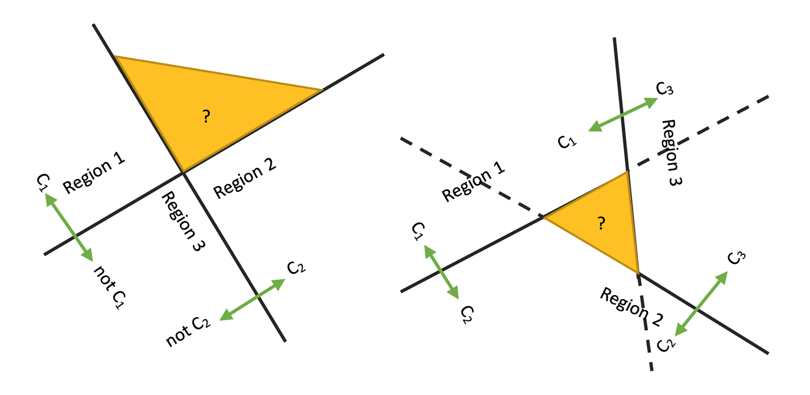
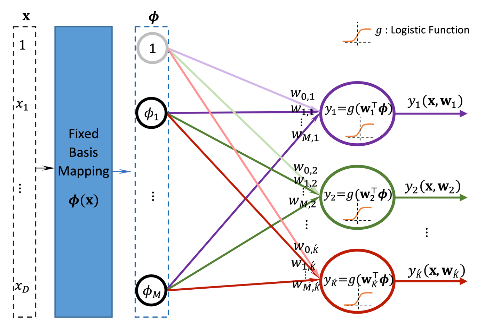
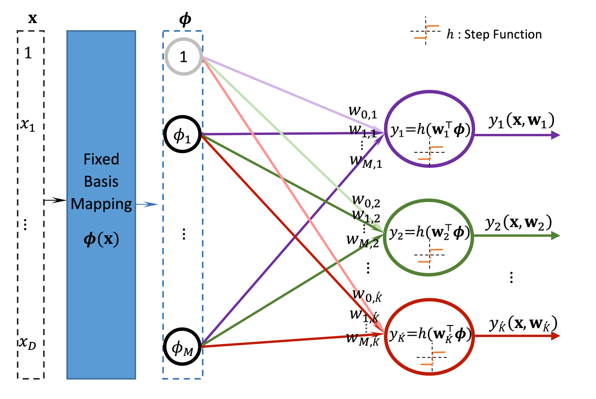
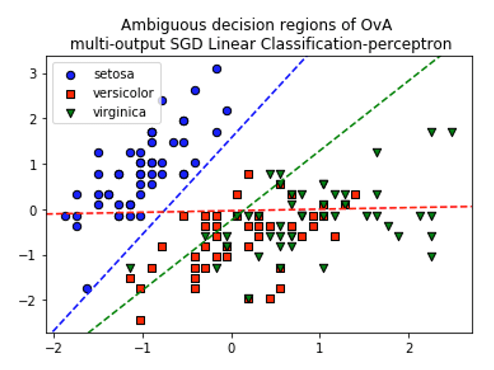
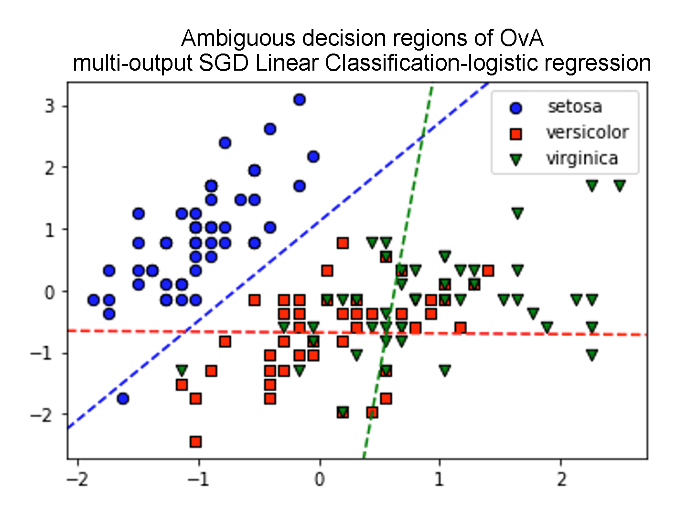
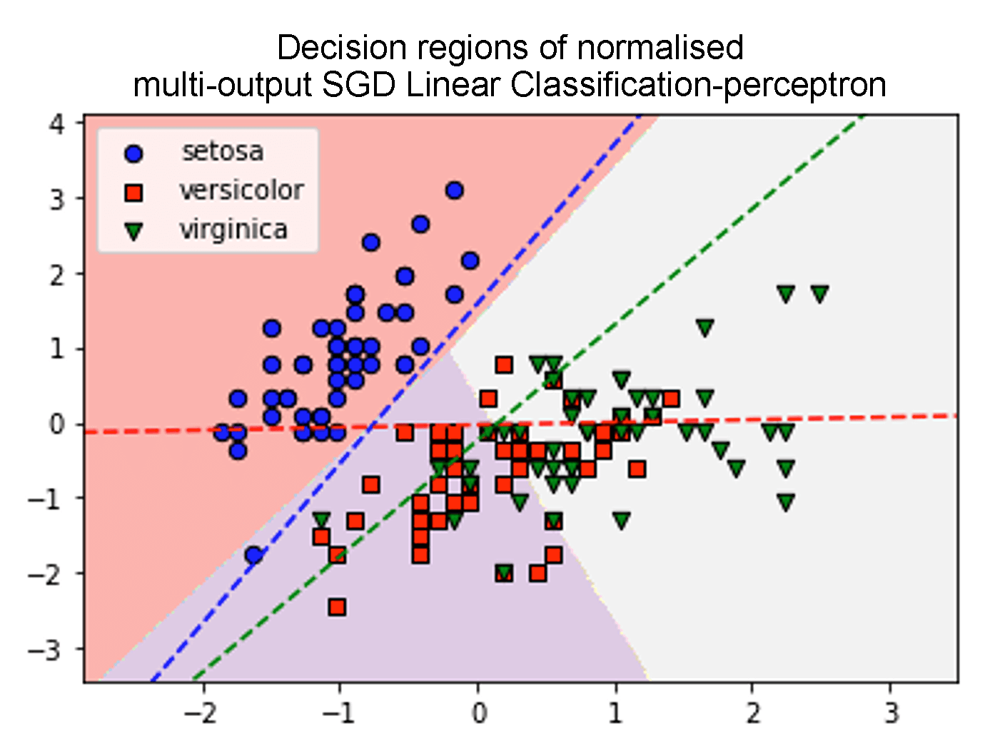
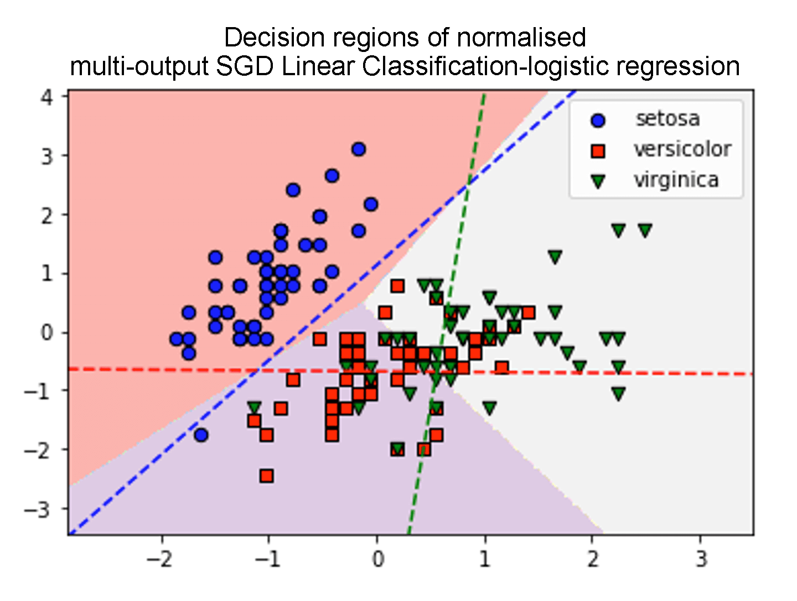
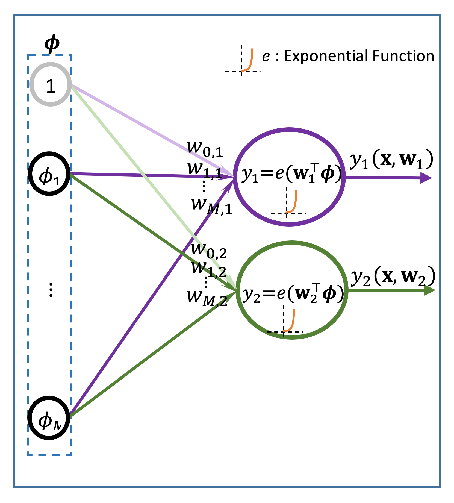
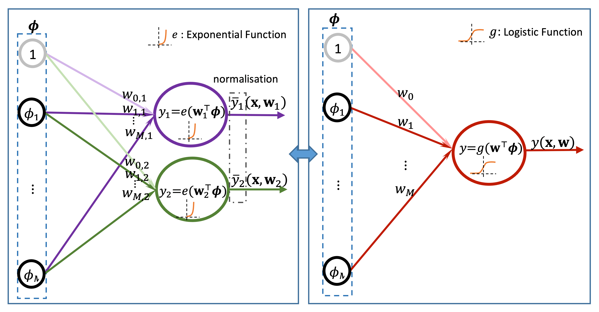
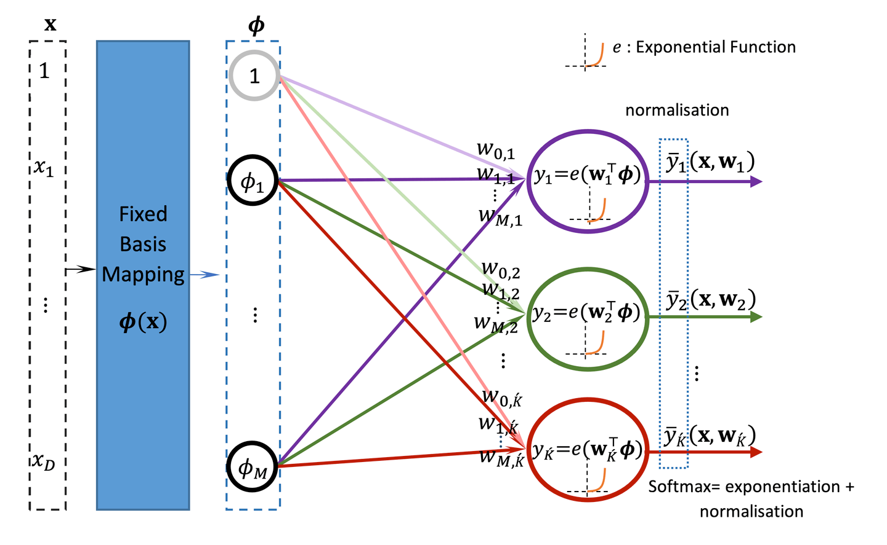

Multi-class problems
Learning outcomes:
After completing this lesson you should be able to:
- understand the need for 1-of-K binary coding
- understand the basic architecture of multinomial logistic regression to tackle multi-class problems
- appreciate the properties and limitations of the one-versus-all approach to extend the capabilities of binary classifiers to multi-class classifiers
- appreciate the strengths and weaknesses of multinomial logistic regression
- appreciate the role of normalisation of the softmax and understand logistic activation as a special case of the softmax
- appreciate that multinomial cross entropy loss maps into a multi-output regression.
In this lesson we will extend the binary classifiers that we have covered previously, the perceptron and the logistic regression, into multi-class problems. We can do that in several ways. By combining multiple of these binary classifiers or by adjusting the basic structure of the techniques, it can deal with multiple classes. Both have similarities, advantages and disadvantages that we will discuss.
1-OF-K binary coding for numerical techniques
As mentioned in section 1 of this unit, when we are facing a classification problem and we want to apply a numerical classification technique such as linear models, perceptron, logistic regression or neural networks (among many other techniques), then we need to formulate the class’s labels numerically. There are many ways to do that. Let us consider a tangible example. Let us assume that we have a classification problem that has the following labels for the classes; {‘High’, ‘Medium’ and ‘Low’} or {‘Truck’, ‘Sedan’, ‘SUV’}.
In the former, since we are dealing with a progression of performance categories, then we can encode the labels as \(\{3,2,1\} .\) In this case the label will take one and only one of the \(\{3,2,1\}\) labels and the output of the prediction has one component \(t_{n}=(C) .\) The estimated classes might take something in between and we interpret the predicted class values that lies in-between as a degree of closeness to the class. So for example if we get 2.2 we interpret it as a value between ‘Medium’ and ‘High’ and being closer to Medium. Or we apply a threshold to round the result to its nearest integer. So for example if we get 2.2 we interpret it as 2 i.e. medium and so on.
On the other hand, for the latter set of labels {‘Truck’, ‘Sedan’, ‘SUV’}, it makes more sense to just utilise a 0,1 scheme to represent ‘Truck’ and ‘no Truck’ class and the same for other classes, where we have also 0,1 represents ‘Sedan’ ‘no Sedan’ and 0,1 represents ‘SUV’ ‘no SUV’. To do so, we would need to make our classifier output three values \(t_{n}=\left[C_{1}, C_{2}, C_{3}\right]\) each \(C_{i}\) can take either 0 or \(1 .\) Such a scheme would get us into issues of having no class at all when all of them are 0 s or predicting more than one class for the same input, so to avoid these issues we implement a 1 -of-K binary coding scheme where we allow one and only one of the \(\mathrm{Ci}\) values to take the value of 1 and the rest must all be 0 s. Note that we have been dealing with this scheme for a binary class problem when we assumed that a one class takes the value of 0 and the other takes the value of 1 . This is the most common scheme for classification, however other codings are possible. For example the perceptron (which deals with binary class problem but can be extended to multi-classes) uses a \(\{1,-1\}\) coding for the two classes.
Issues of combing a set of independent binary classifiers to deal with a multi-class problem
When dealing with multi-class problems using a set of binary classifiers we might be tempted to use one for each class independently and then combine them in some way. However this can lead to some serious issues as we show in figure 5.34 below.

Figure 5.34. Similar to Bishop 2006. Left: Two binary classifiers used independently in a one-versus-all (OvA) fashion to decide whether an instance belongs or does not belong to a class. Right: Binary classifiers used independently in one-versus-one fashion to decide if an instance belongs to one of two classes.
In figure 5.34 above, the yellow area to the left is an area of ambiguity where the two classifiers can dictate that an instance belongs to both class \(C_{1}\) and class \(C_{2}\). The yellow area to the right is an area of ambiguity where an instance can be decided to belong to two or three classes at the same time. The solution is to use a classifier with multi-linear boundaries \(y_{k}(x)\) (similar to when we had multi-output regression) and decide on an instance x belongs to class \(C_{k}\) only when its activation function \(y_{k}(x)\) is higher than all other classes activations \(y_{j}(x) .\) One way to do that is by normalising the regularised scores that we obtain from each independent classifier (on the left) and instead of applying one-versus-all approach we choose the highest score. You will see some examples of the effectiveness of this strategy later.
Multi-output (multi-class) linear classification models
The structure would be similar to the structure that we have seen for the multi-output linear regression which is shown below for convenience.

Figure 5.35. Schematic representation of a multi-output independent logistic regression linear classifiers with basis.
The linear classification model with multiple output can be expressed as:
Figure 5.35 above shows logistic regression with \(K\) multiple outputs. The number of outputs can be associated with multiple classes \(K\) where in general \(\hat{K} \geq K-1\) with \(\hat{K}=K-1\) when the classes are linearly separable and their boundaries are parallel. For example we may need only 2 lines to separate 3 classes. When the classes are non-linearly separable, \(K\) corresponds to the number of decision boundaries needed to separate the classes. The issue with this structure is that it does not harmonise the outputs and may run into the issues mentioned in the previous section (particularly the issues associated with one-versus-all) because of the independence of the outputs.
In such cases, further processing will be needed in order to decide which class the data point is from. Each classifier \(i\) is specialised in one class \(i\) and produces an independent probability estimate \(p_{i}\left(C_{i} \mid \mathbf{x}\right) .\) One of the simplest approaches is to normalise the scores \(p_{i}\left(C_{i} \mid \mathbf{x}\right)\) that were produced by the independent classifier to properly obtain a unified probability distribution \(p\left(C_{i} \mid \mathbf{x}\right)=\frac{p_{i}\left(C_{i} \mid \mathbf{x}\right)}{\sum_{i=1}^{K} p_{i}\left(C_{i} \mid \mathbf{x}\right)}\) over the different classes \(i\).
The final decision on which class the data point is from can be performed by picking the class with the max probability; see section 5.2 of this paper by Zadrozny and Elkan (2002) for more details. If you have trouble accessing this paper via this link, try copying the hyperlink and opening it in an incognito or private window. See also here and here to know more about linear classifiers in sklearn.
The same structure can be produced to the perceptron; we only need to change the activation function.

Figure 5.36. Schematic representation of a multi-output independent perceptron linear classifiers with basis.


Figure 5.37. Graphs showing ambiguous decision regions of a one-versus-all (OvA), multi-output, SGD linear classification, using perceptron algorithm and logistic regression algorithm.


Figure 5.38. Graphs showing decision regions of a normalised, multi-output SGD linear classification using perceptron algorithm and logistic regression algorithm.
The figures above show decision boundaries for multi-output (multi-class) perceptron and logistic regression for the iris dataset. The setosa is linearly separable from the rest, while versicolor and virginica are non-linearly separable.
Figure 5.37 shows one-versus-all (OvA), which creates ambiguous regions (hyperplanes) shown by the dashed lines. For the perceptron it is struggling to come up with close enough boundaries and thrown off by the outliers in both the versicolor and the virginica. The logistic regression one-versus-all did better in that sense because it is much more resilient towards outliers, but it still has an ambiguous region (the triangle in the middle of the figure) where two classifiers are thinking that the data in the middle belongs to their respective positive class.
The shaded decision regions in figure 5.38 are obtained via the normalisation of the scores given by the independent classifiers in order to overcome the ambiguity issue of the OvA approach that we mentioned in the previous section.
Multinomial logistic regression: softmax regression
In the last section we saw how logistic regression has been built originally for binary classification where we expect the output of the activation function to give us one value in the range \([0,1]\). The value represents the probability of the input being from the positive class and we get the probability from the negative class by exploiting that the sum of both must be 1. In other words, if \(p\left(C_{1} \mid \mathbf{x}\right)\) is given by the one output of the logistic regression model then \(p\left(C_{0} \mid \mathbf{x}\right)=1-p\left(C_{1} \mid \mathbf{x}\right)\)
We also saw how we can adapt multiple of these binary classifiers in order to deal with multi-class problems where we have multiple classes that we need to deal with. Basically, we exploited the multi-output structure that we developed in regression and we extended it to multi binary classification to deal with multi-class cases. We have seen three approaches to harmonise or combine the multi-output into one decision: where we can apply OvA or OvO or combine in other ways. We saw also that OvA and OvO approaches create ambiguous decision regions and we saw that we can deal with OvA ambiguity via normalisation.
In this section we will extend the structure of logistic regression into multi-classes. The technique is called multinomial logistic regression because we are dealing with a multinomial target variable. Binomial and multinomial are names that come from probability theory to deal with variables that take only two values or multiple values. The dependent variable here is the label which can take one of multiple categorical values. So essentially it is a fancy name for multi-class problems. So we are extending logistic regression from binomial to multinomial. We will start with binary logistic regression that we covered in a previous section.
Let us assume that we build a multi-output model as shown in figure 5.40:

Figure 5.40. 2-output linear classifier with exponential activation function.
Let us normalise
By defining \(\mathbf{w}:=\mathbf{w}_{2}-\mathbf{w}_{1}\) and substituting we get:
Similarly due to normalisation we have:
So we have proved that: \({\bar{y}}_1=y\) and \({\bar{y}}_2=1-y\)
In other words, we have proven that we can move from the 2-output model to the logistic regression model by normalisation.
We call the normalised exponential activation function a softmax function (or a Gibbs or Boltzmann function when we use a cooling parameter with it –originally used in thermodynamic literature- you will come across this function later in the Deep Learning module).
Softmax is a generalisation of the logistic function into multi-dimensional space. Note that we get the same result if we define \(y_1=e^{-\mathbf{w}_1^\top{\phi}}\) and \(y_2=e^{-\mathbf{w}_2^\top{\phi}}\) we just get that \({\bar{y}}_2=\frac{1}{1+e^{\mathbf{w}^\top{\phi}}}\) and that \({\bar{y}}_1=1-{\bar{y}}_2\) which is essentially the same result.
With softmax we need to calculate first the exponential activation for all the outputs and then we normalise them, so there is the added overhead of normalisation. This is not a problem here, given that we are talking about a small number of classes. But when the structure needed to be parallelised, the normalisation creates a bottleneck if it is in the middle of a larger structure or if it is in a hidden layer (although it is rare to use softmax in the hidden layers). So, it is faster to use logistic function directly for the 2-class problems instead of the softmax.
In figure 5.41 below we show the two output linear classification functions with a softmax activation function and its equivalent logistic regression structure. We signify the softmax by adding a dashed box around the outputs and a bar on top of each output like \({\bar{y}}_1\) and \({\bar{y}}_2\). This represents the normalisation operation. Note the difference between scaling and normalisation. Rescaling a component of all instances (dashed line box) is a pre-processing operation and is performed on the level of the entire dataset. Normalising an instance (fine dotted line box) is performed on the level of individual instance. In simple terms, in scaling we take a max of each component in a tabular dataset and we divide all instances of the component by this max. In normalisation we go across the components of an individual instance and we divide by the sum of the components of this instance.

Figure 5.41. 2-output normalised linear classifier with exponential activation function (left) and its equivalent logistic regression (right).
So, now we are in a position to be able to generalise the logistic regression of a binary class problem into a multi-class problem by just defining a structure with as many outputs as we want with an exponential activation function that we normalise.

Figure 5.42. Multinomial Logistic Regression (aka softmax regression): a multi-output normalised linear classifier with exponential activation function.
Note that if we have \(K\) classes \(\acute{K}\) can be made \(= K-1\) instead of \(K\) if we exploit that one of the normalised outputs is unnecessary as it can be deduced from summation of the outputs to 1 (called pivoting).
Finally the multinomial logistic regression model can be succinctly defined as
Loss function
Recall that we have used the cross entropy for logistic regression where we have
This form implicitly chooses one of the two terms \(\log \left(y_{n}\right)\) or \(\log \left(1-y_{n}\right)\) depending on the actual class. If the class is \(t_n=0\) then the first term cancels and we are left with the second term \(\log \left(1-y_{n}\right)\), while if the class is \(t_n=1\) the second term cancels and we are left with the first term \(\log \left(y_{n}\right)\). We can apply a more general form of cross entropy to multi-class by adopting a 1-of-k binary coding for the label. The resultant mean over the whole dataset will be used as the loss function for a softmax regression for a problem with multi-class.
Remember that if we use 1-of-k binary coding for the label, then each label takes the form \(\boldsymbol{t}_{n}=[0,\ 0,\ldots,1,0,\ldots,0]\). So for example if the data point \(\mathbf{x}_n\) actual class \(C_3\) and we have a total of 4 classes in the problem, then \(\boldsymbol{t}_{n}=\left[0,\ \ 0,\ 1,\ 0\right]\) while if point \(\mathbf{x}_n\) actual class is \(C_1\) then \(\boldsymbol{t}_{n}=\left[1,\ 0,\ 0,\ 0\right]\) and so on. So if we assume that we use 1-of-k binary coding then the cross entropy of a multi-class problem can be defined as:
Which can be written succinctly as:
The derivatives also satisfy the nice property that we described in the logistic regression section. You can choose to see how to derive the gradient in the box at the end of this section, but you can carry on with the rest of the unit without doing so, this is not assessed.
where we denoted \(\nabla_{k}:=\nabla_{\mathbf{w}_{k}}\). The gradient is again taking the same form of a linear regression data point error. This is great as the algorithms will take a very similar shape as we saw earlier for the logistic regression.
And so the stochastic gradient decent update takes the usual form of the logistic regression but for each normalised output \({\bar{y}}_{k,n}={\bar{y}}_k(\mathbf{x}_n)\) as follows:
And the loss function for the softmax regression can be written as:
The gradient takes the form:
The gradient of the cross entropy terms from multi class problem
- We define \(\sum_{i=1}^{K} y_{i}:=\overline{\bar{y}}\) and hence \({\bar{y}}_k=\frac{y_k}{\sum_{i=1}^{K}y_i}=\frac{y_k}{\bar{\bar{y}}}\)
- Also we note that \(\sum_{k=1}^{K}t_k=1\)
- We will denote \(\nabla_{\mathbf{w}_j}≔∇j\) where we have \(y_{j}=e^{\mathbf{w}_{j}^{\top} \boldsymbol{\phi}}\)
- \(\nabla_{\mathbf{w}_{j}} y_{j}=\nabla_{j} y_{j}=\boldsymbol{\phi} e^{\mathbf{w}_{j}^{\top} \boldsymbol{\phi}}=\boldsymbol{\phi} y_{j}\)
- \(\nabla_jy_k=0\) when \(j\neq k\)
- \(\nabla_{j} \sum_{i=1}^{K} y_{i}=\boldsymbol{\phi} y_{j}\) and \(\nabla_{j} \overline{\bar{y}}=\boldsymbol{\phi} y_{j}\)
- \(\nabla_{j} \log y_{j}=\frac{\nabla_{j} y_{j}}{y_{j}}=\frac{\phi y_{j}}{y_{j}}=\boldsymbol{\phi}\)
Now we are ready to get the derivative
\(\nabla_{j} \widetilde{H}_{n}\left(\mathbf{w}_{j}\right)=-\nabla_{j} \sum_{k=1}^{K} t_{k} \log \left(\bar{y}_{k}\right)\)
\(\nabla_{j} \widetilde{H}_{n}\left(\mathbf{w}_{j}\right)=-\nabla_{j} \sum_{k=1}^{K} t_{k} \log \left(\frac{y_{k}}{\overline{\bar{y}}}\right)\quad\) as per 1
\(\nabla_{j} \widetilde{H}_{n}\left(\mathbf{w}_{j}\right)=-\nabla_{j}\left(\sum_{k=1}^{K} t_{k} \log y_{k}-\sum_{k=1}^{K} t_{k} \log \overline{\bar{y}}\right)\)
\(\nabla_{j} \widetilde{H}_{n}\left(\mathbf{w}_{j}\right)=-\nabla_{j}\left(\sum_{k=1}^{K} t_{k} \log y_{k}-\log \overline{\bar{y}} \sum_{k=1}^{K} t_{k}\right)\)
\(\nabla_{j} \widetilde{H}_{n}\left(\mathbf{w}_{j}\right)=-\nabla_{j}\left(\sum_{k=1}^{K} t_{k} \log y_{k}-\log \overline{\bar{y}}\right) \quad\) as per 2
\(\nabla_{j} \widetilde{H}_{n}\left(\mathbf{w}_{j}\right)=-\left(\sum_{k=1}^{K} t_{k} \nabla_{j} \log y_{k}-\nabla_{j} \log \overline{\bar{y}}\right)\)
\(\nabla_{j} \widetilde{H}_{n}\left(\mathbf{w}_{j}\right)=-\left(t_{j} \boldsymbol{\phi}_{n}-\frac{\phi y_{j}}{y}\right) \quad\) as per 3.c and 3.d
Regularised mini-batch stochastic gradient descent updates for multi-class logistic regression model
A regularised mini-batch stochastic gradient decent can be devised for this technique as we did earlier and is shown below.
Note that for the logistic regression there is no least squares solution, as this does not suit the loss function which was based on the entropy. It can be proven that the cross entropy is equivalent to a maximum likelihood approach.
Algorithm 4: Regularised mini-batch stochastic gradient descent updates for multinomial logistic regression model
Input:
Input set as a design matrix \(\mathbf{X}=\left[\mathbf{x}_{1}^{\top}, \ldots, \mathbf{x}_{N}^{\top}\right]^{\top} \operatorname{each} \mathbf{x}_{n}\) is of size \(D\)
Labels set as a matrix \(\mathbf{T}=\left[\boldsymbol{t}_{1}^{\top}, \ldots, \boldsymbol{t}_{N}^{\top}\right]^{\top}\) each \(\boldsymbol{t}_{n}\) is of size \(K\).
\(\mathbf{X}^{\prime}, \mathbf{T}^{\prime}\) holdout validation set that have similar structure to the above
\(\boldsymbol{\mu}_{j}: M\) Basis centres, each is a vector of size \(D\)
\(\boldsymbol{\Sigma}\) : Covariance matrix of size \(\mathrm{D} \times \mathrm{D}\)
\(\eta_{0}\): initial learning rate
\(b\): mini-batch size (specifies how frequent we want to update the weights \(\mathbf{W}\))
\(\lambda:\) regularisation parameter
\(ep\): max number of epochs
\(\varepsilon:\) early stopping threshold
Output: \(\mathbf{W}\) an approximation for optimum weights \(\mathbf{W}^{*}\); a matrix of size \((M+1) \times K\).
MLogReg \(\left(\mathbf{X}, \mathbf{T}, \mathbf{X}^{\prime}, \mathbf{T}^{\prime}, \eta_{0}, b, \lambda, e p, \varepsilon\right)\):
Initialise \(\mathbf{W}, \mathbf{W}^{\prime}=\mathbf{W}, \eta=\eta_{0}\) and \(\bar{J}_{0}=\infty\)
For epoch \(= 1:ep\) # hyper parameter: max number of epochs
For iteration \(\tau=1: q\) # \(q≥N/ b\)
Select a mini-batch \(\mathbf{X}_{\tau}, \mathbf{T}_{\tau}\) of size \(b\) from \(\mathbf{X}, \mathbf{T}\) # randomly or by shuffling & partitioning
Map \(\mathbf{X}_{\tau}\) to \(\mathbf{\Phi}_{\boldsymbol{\tau}}: \boldsymbol{\phi}\left(\mathbf{x}_{n}\right)=\left(1, \boldsymbol{\phi}_{1}, \ldots, \boldsymbol{\phi}_{M-1}\right)\) # \(\phi_{j}\left(\mathbf{x}_{n}\right)=\mathcal{N}\left(\mathbf{x}_{n} \mid \boldsymbol{\mu}_{j}, \mathbf{\Sigma}\right)\) or other basis
\(\boldsymbol{Z}_{\tau}=\mathbf{\Phi}_{\boldsymbol{\tau}} \mathbf{W}^{\prime}\)
\(\boldsymbol{Y}_{\tau}=e^{\boldsymbol{Z}_{\tau}}\) # exponentiation of \(\boldsymbol{Z}_{\tau}\) element-wise
Normalise matrix \(\boldsymbol{Y}_{\tau}\) row wise # (divide each element of a row by the row sum)
\(\mathbf{W}^{\prime}=\left(1-\frac{1}{b} \eta \lambda\right) \mathbf{W}^{\prime}+\frac{1}{b} \eta \mathbf{\Phi}_{\tau}^{\top}\left(\mathbf{T}_{\boldsymbol{\tau}}-\mathbf{\Phi}_{\boldsymbol{\tau}} \mathbf{W}^{\prime}\right)\) # update with regularisation
Decay \(η\) # if necessary
\(\bar{J}_{e p}=\frac{1}{2 N}\left\|\mathbf{T}^{\prime}-\mathbf{\Phi}^{\prime} \mathbf{W}^{\prime}\right\|^{2}\)# calculate the loss or other metric on the validation set
If \(\bar{J}_{e p}>\bar{J}_{e p-1}+\varepsilon:\) break # simple early stopping or other more sophisticate cond.
Else \(\mathbf{W}=\mathbf{W}^{\prime}\)
Return the final solution \(\mathbf{W}\)
Note
Please note that we used a ridge regularisation (L2 norm for the weights). If we instead use the absolute value (L1 norm) we get the Lasso regularisation. Lasso has the advantage of driving the weights of irrelevant features to 0 which effectively works as an intrinsic feature selection mechanism. This can be helpful in many situations, and you can experiment with Lasso in sklearn. Ridge however provides a more streamlined presentation and hence it is covered here. This applies on both logistic regression and multinomial logistic regression. See this sklearn Ridge link and this Lasso link for a description, as well as this link for pitfalls of interpretation of features coefficient in linear models.
Lesson summary
In this lesson, we have generalised the binary classification technique that we covered in previous lessons, namely perceptrons and logistic regression, into a multi-classification model, via two means. The first one was to use the one-versus-all approach, and the second was to generalise the logistic regression model into a multinomial logistic regression model, using the softmax activation function. You have also seen that the first approach suffers from ambiguity in determining the classes of some of the instances of the given dataset.